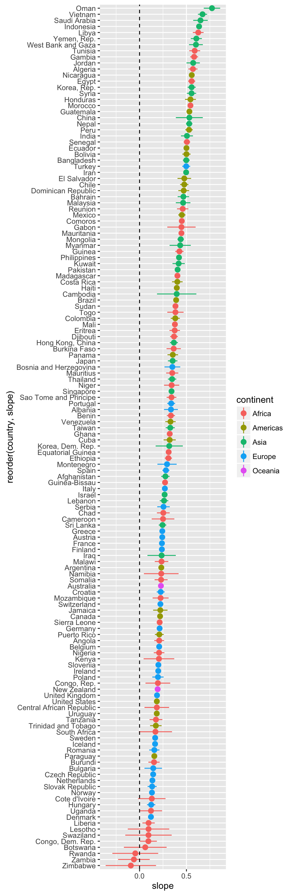
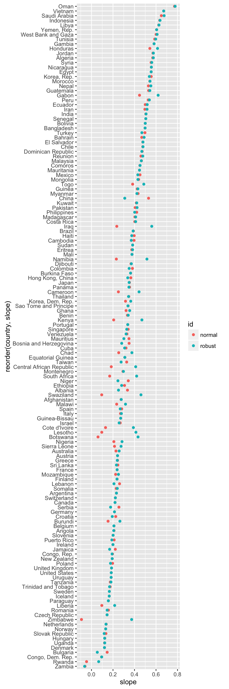
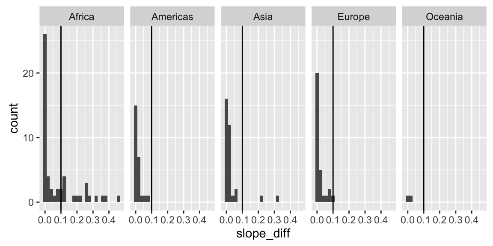
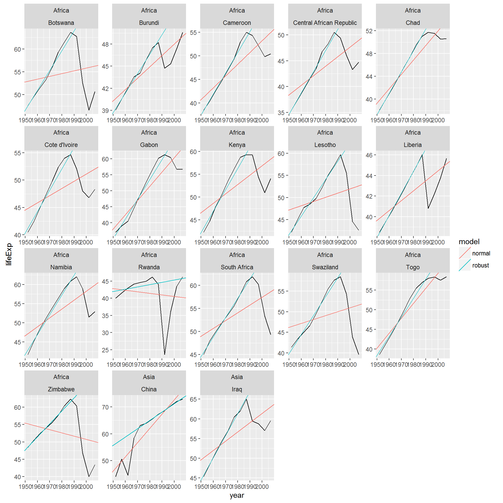
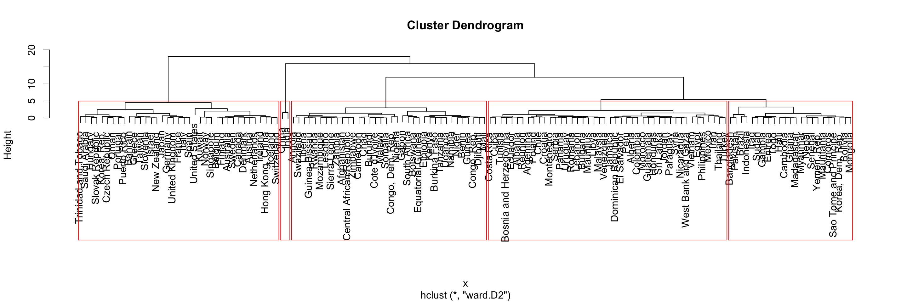
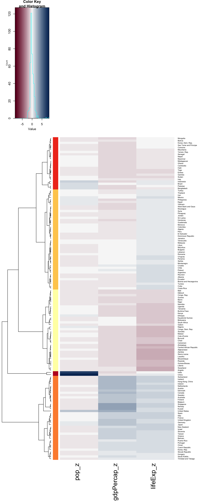
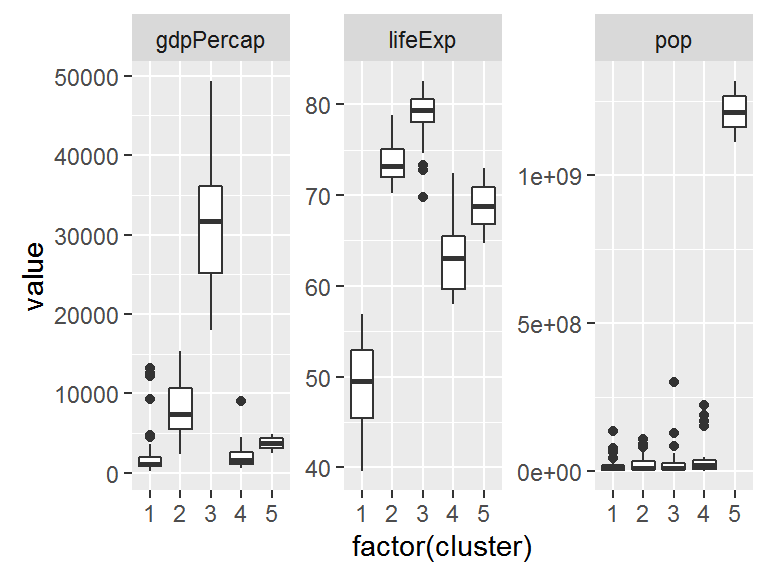

Exploring Gapminder Data
16 October, 2015
Introduction
This report is the results of a quick exploration of the Gapminder dataset, prepared as a part of STAT545 at UBC.
Since gapminder data is conveniently located online, don’t need to download anything.
gapminder <- read.delim(file = "http://www.stat.ubc.ca/~jenny/notOcto/STAT545A/examples/gapminder/data/gapminderDataFiveYear.txt")Plotting the slope of each country and it’s intercept
I will calculate correlation of life expectancy vs year for each country. To quantify variability, I will extract the confidence interval of the slope.
gapminder_regression <- gapminder %>%
group_by(continent, country) %>%
do(model = lm(lifeExp ~ year, data = .)) %>%
mutate(
slope = coef(model)[2],
ylo = confint(model)[2], # confidence interval of the slope
yhi = confint(model)[4]
)
kable(gapminder_regression %>% select(-model) %>% head(), format = "markdown")| continent | country | slope | ylo | yhi |
|---|---|---|---|---|
| Africa | Algeria | 0.5692797 | 0.5199775 | 0.6185819 |
| Africa | Angola | 0.2093399 | 0.1569073 | 0.2617724 |
| Africa | Benin | 0.3342329 | 0.2904577 | 0.3780080 |
| Africa | Botswana | 0.0606685 | -0.1671034 | 0.2884404 |
| Africa | Burkina Faso | 0.3639748 | 0.2876894 | 0.4402602 |
| Africa | Burundi | 0.1541343 | 0.0941082 | 0.2141603 |

It seems like everybody is relatively similar - what happens if we use a robust linear model?
gapminder_regression_robust <- gapminder %>%
group_by(continent, country) %>%
do(model = rlm(formula = lifeExp ~ year, data = ., method = "MM")) %>%
mutate(
slope = coef(model)[2],
ylo = confint(model)[2], # confidence interval of the slope
yhi = confint(model)[4]
)Does robust slopes differ from non-robust slopes?

Looks like some countries have a large difference in their slopes when using robust and non-robust methods. Let’s see which ones?
slope_diff <- normal_vs_robust %>%
group_by(continent, country) %>%
summarize(slope_diff = max(slope) - min(slope))
kable(slope_diff %>% head(), format = "markdown")| continent | country | slope_diff |
|---|---|---|
| Africa | Algeria | 0.0057086 |
| Africa | Angola | 0.0024075 |
| Africa | Benin | 0.0072147 |
| Africa | Botswana | 0.3721748 |
| Africa | Burkina Faso | 0.0006352 |
| Africa | Burundi | 0.1103078 |
cutoff = 0.1
slope_diff %>%
ggplot(aes(slope_diff)) + geom_bar(binwidth=0.02) + geom_vline(xintercept = cutoff) + facet_wrap(~continent, nrow=1)
I will set a cutoff at 0.06 difference in slope. Presumably, countries beyond this difference means there is a lot of variability such that a robust method fits better (means there are outlier datapoints in years). Also, looks like Africa and Asia has these “outlier” countries - other continents don’t. Africa also dominates in the count of countries.
Let’s see which countries these are:
(countries_of_interest <- filter(slope_diff, slope_diff > cutoff)$country %>% as.character())## [1] "Botswana" "Burundi"
## [3] "Cameroon" "Central African Republic"
## [5] "Chad" "Cote d'Ivoire"
## [7] "Gabon" "Kenya"
## [9] "Lesotho" "Liberia"
## [11] "Namibia" "Rwanda"
## [13] "South Africa" "Swaziland"
## [15] "Togo" "Zimbabwe"
## [17] "China" "Iraq"Actually, I just realized that all this work is a very convoluted way to detect countries with outliers… Well anyway, moving on.
Now I want to plot these countries to see what’s up with them. First, I’ll make a function that returns (in a data.frame) the slope and intercepts for a normal model and a robust model.
compare_models <- function(x) {
model_lm <- lm(lifeExp ~ year, data = x)
lm_df <- data.frame(slope = coef(model_lm)[2], intercept = coef(model_lm)[1], model = "normal")
model_rlm <- rlm(lifeExp ~ year, data = x, method = "MM")
rlm_df <- data.frame(slope = coef(model_rlm)[2], intercept = coef(model_rlm)[1], model = "robust")
return(rbind(lm_df, rlm_df))
}
# Test this function
kable(compare_models(gapminder %>% filter(country == "Zimbabwe")), format = "markdown")| slope | intercept | model | |
|---|---|---|---|
| year | -0.0930210 | 236.7982 | normal |
| year1 | 0.3734689 | -680.4914 | robust |
Works, great. Time to run this.
gapminder_regression_interest <- gapminder %>%
group_by(continent, country) %>%
do(compare_models(x = .)) %>%
filter(country %in% countries_of_interest)
kable(gapminder_regression_interest %>% head(), format="markdown")| continent | country | slope | intercept | model |
|---|---|---|---|---|
| Africa | Botswana | 0.0606685 | -65.49586 | normal |
| Africa | Botswana | 0.4328433 | -797.39386 | robust |
| Africa | Burundi | 0.1541343 | -260.29145 | normal |
| Africa | Burundi | 0.2644420 | -476.96720 | robust |
| Africa | Cameroon | 0.2501469 | -447.03720 | normal |
| Africa | Cameroon | 0.4422843 | -824.94565 | robust |
inner_join(gapminder_regression_interest, gapminder) %>%
ggplot(aes(x = year, y = lifeExp, color = model)) +
geom_line(color = "black")+
geom_abline(data = gapminder_regression_interest, aes(intercept = intercept, slope = slope, color = model)) +
facet_wrap(continent~country, scales = "free")## Joining, by = c("continent", "country")
For some reason a legend isn’t showing. Red = “normal”, blue = “robust”.
Well, it seems like countries with outliers tend to suffer massive loss of LifeExp then bounce back - presumably war or natural disaster. Robust modelling results in a line that says “this is the life expectancy assuming nothing terrible happened” - which is pretty cool. I might come back to this and think of more interpretations.
Clustering to see if we can identify classes of countries
Now, let’s do some clustering to see if we can tease out what a developing country is.
First, I need to normalize all the “dimensions” in the data to the average so that distance calculations won’t be skewed. For now, let’s just work with 2007 data (I need to think of a way to incorporate all year data down the road).
gapminder_averages <- gapminder %>%
filter(year == 2007) %>%
summarise_each(funs(mean, sd), pop, lifeExp, gdpPercap)
kable(gapminder_averages, format = "markdown")| pop_mean | lifeExp_mean | gdpPercap_mean | pop_sd | lifeExp_sd | gdpPercap_sd |
|---|---|---|---|---|---|
| 44021220 | 67.00742 | 11680.07 | 147621398 | 12.07302 | 12859.94 |
Next, I will calculate the z score of each country in 2007, using the formula:
More information on what is a z score here
To do this, I make a function:
gapminder_2007 <- gapminder %>% filter(year == 2007)
calc_z_score <- function(x) {
pop_z <- (x$pop - gapminder_averages$pop_mean)/gapminder_averages$pop_sd
lifeExp_z <- (x$lifeExp - gapminder_averages$lifeExp_mean)/gapminder_averages$lifeExp_sd
gdpPercap_z <- (x$gdpPercap - gapminder_averages$gdpPercap_mean)/gapminder_averages$gdpPercap_sd
return(data.frame(pop_z, lifeExp_z, gdpPercap_z))
}
# Test the function
calc_z_score(gapminder_2007 %>% filter(country == "Canada"))## pop_z lifeExp_z gdpPercap_z
## 1 -0.07201584 1.130254 1.915963Function works. Let’s do this for every country now.
gapminder_2007_z <- gapminder_2007 %>%
group_by(country) %>%
do(calc_z_score(.))
kable(gapminder_2007_z %>% head(), format = "markdown")| country | pop_z | lifeExp_z | gdpPercap_z |
|---|---|---|---|
| Afghanistan | -0.0821784 | -1.9199357 | -0.8324684 |
| Albania | -0.2738133 | 0.7798858 | -0.4465840 |
| Algeria | -0.0724015 | 0.4384634 | -0.4243181 |
| Angola | -0.2140661 | -2.0107994 | -0.5352157 |
| Argentina | -0.0251948 | 0.6885251 | 0.0854831 |
| Australia | -0.1597807 | 1.1784605 | 1.7694717 |
Now calculate a distance matrix. First, dist requires a numeric matrix.
gapminder_zmatrix <- data.matrix(gapminder_2007_z[,2:4])
rownames(gapminder_zmatrix) <- gapminder_2007_z$countryNow, we cluster!
mydist <- function(x) dist(x, method = "euclidian")
myhclust <- function(x) hclust(x, method = "ward.D2")
tree <- myhclust(mydist(gapminder_zmatrix))
plot(tree)
rect.hclust(tree, k = 5)
clustered_countries <- data.frame(country = names(cutree(tree, k = 5)), cluster = cutree(tree, k = 5))Let’s see the values (picked colors from here)
nbreaks=41
colors=colorRampPalette(c("#67001f", "#f7f7f7", "#053061"), bias = 1)(nbreaks)
label_colors <- c("#ffffb2", "#fecc5c", "#fd8d3c", "#f03b20", "#bd0026")
heatmap.2(gapminder_zmatrix,
distfun=mydist,
hclustfun=myhclust,
RowSideColors = label_colors[clustered_countries$cluster],
dendrogram = "row",
Rowv=reorder(as.dendrogram(myhclust(mydist(gapminder_zmatrix))), wts=1:ncol(gapminder_zmatrix)),
col = colors,
trace = "none",
margins = c(13,8))
Let’s see the population, gdp and lifeExp of each of the clusters
inner_join(clustered_countries, gapminder_2007) %>%
gather(key = measure, value = value, ... = pop, gdpPercap, lifeExp) %>%
tbl_df() %>%
ggplot(aes(x = factor(cluster), y = value)) + geom_boxplot() + facet_wrap(~ measure, scales="free")## Joining, by = "country"
Looking at this, I conclude cluster 3 consists of first world countries. Who is part of this cluster?
subset(clustered_countries, cluster == 3)$country## [1] Australia Austria Bahrain
## [4] Belgium Canada Czech Republic
## [7] Denmark Finland France
## [10] Germany Greece Hong Kong, China
## [13] Hungary Iceland Ireland
## [16] Israel Italy Japan
## [19] Korea, Rep. Kuwait Netherlands
## [22] New Zealand Norway Oman
## [25] Portugal Puerto Rico Saudi Arabia
## [28] Singapore Slovak Republic Slovenia
## [31] Spain Sweden Switzerland
## [34] Taiwan Trinidad and Tobago United Kingdom
## [37] United States
## 142 Levels: Afghanistan Albania Algeria Angola Argentina ... ZimbabweYep, looks legit. It seems that using the three simple metrics population, gdp per capita, and life expentancy, one can classify countries into “first world”, “third world” and etc.